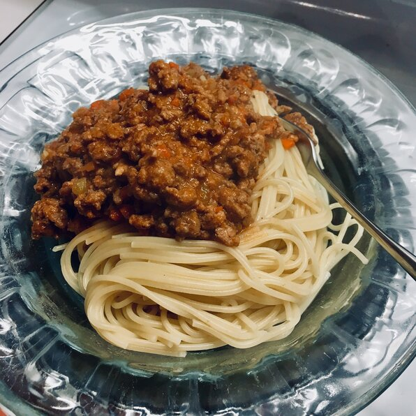

Ragù Bolognese

Description
This is the real deal, the master of all the meat sauces, the legendary Ragù Bolognese
Ingredients
- 1/2 cup extra virgin olive oil
- 1/2 cup butter
- 1 cup minced onion
- 1/4 cup mincet carrot
- 1 pund ground veal
- 1 pound ground pork
- 1/2 pound ground beef
- 1/4 cup finely chopped pancetta bacon
- 1/2 cup milk
- 2 cups tomato sauce
- 2 cups beef broth
Steps
- Heat olive oil and butter in a large saucepan over medium heat.
Saute onion, celery and carrots until soft.
- Add veal, pork, beef and pancetta, and cook until evenly brown, 15 to 20 minutes.
- Pour in milk, and cook until liquid has evaporated, about 15 minutes.
Stir in tomato sauce and beef broth.
- Cover, and simmer 2 hours and half.